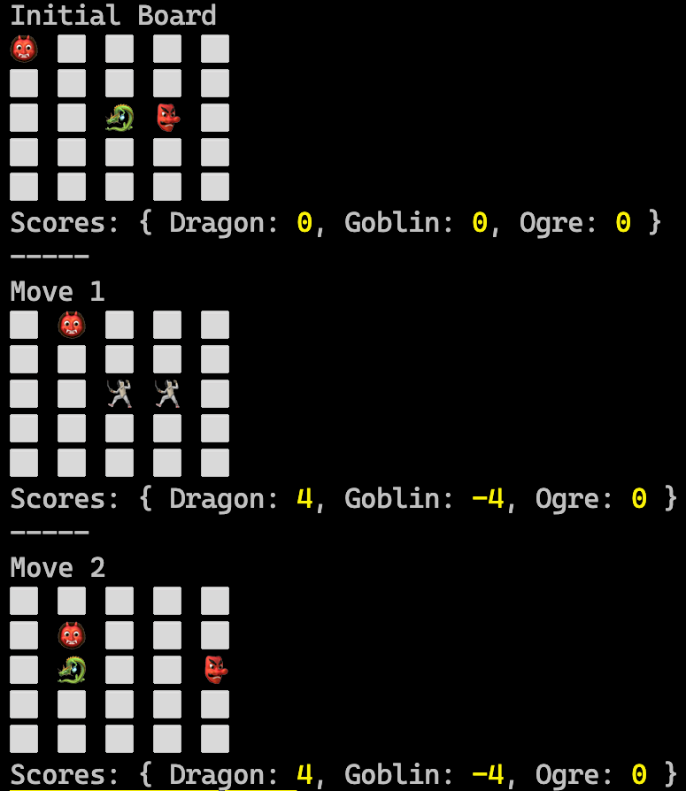

竞技场
Mythos的Gridlock竞技场
背景
在神秘的Mythos大陆，各个领域的生物聚集在Gridlock竞技场进行战斗，这是一个类似国际象棋的网格，在这里策略、力量和机智都将经受考验。每个生物都有其独特的移动、力量和策略。
目标
你的任务是模拟在Gridlock竞技场中的战斗。每个生物将进行一系列的移动，每次移动后，如果生物落在同一个方格上，可能会对其对手造成伤害。目标是在战斗结束时积累最高的分数。一轮结束的标志是所有生物本轮都进行了移动。为了跟踪战斗的进展，请在每轮结束后可视化网格，并在网格下方显示当前分数。
规格
- 网格动态:
- Gridlock竞技场是一个5x5的网格。
- 网格中的每个单元格可以为空或者被一个生物占据。
-
生物可以向上、向下、向左或向右移动一个单元格。
-
生物数据:
名称 起点 移动 力量 图标 龙 2,2 右, 左, 下 7 🐉 哥布林 2,3 左, 右, 上 3 👺 巨魔 0,0 右, 下, 下 5 👹 -
回合顺序
- 生物按顺序进行移动。
- 每个生物按照从顶部到下一个的顺序进行评估。
- 生物总是采取其移动规格中最左边的尚未执行的移动。
- 如果一个生物将要落在另一个生物占据的单元格上，生物不会移动，而是发生战斗（见下文的战斗动态）。
- 一轮结束的标志是所有生物本轮都进行了移动。
- 之后，下一轮从顶部的生物开始。
- 如果一个生物在其移动规格中没有更多的移动，则游戏结束。
-
战斗动态:
- 如果生物将要落在另一个生物已经占据的单元格上，它们双方将互相造成伤害。
- 每个生物获得等于它对其他生物造成的伤害的分数。
- 每个生物失去等于它所受到的伤害的分数。
- 每对生物每轮只能战斗一次。
-
输出:
- 每轮结束后，通过在控制台中打印网格来可视化网格，使用⬜️表示一个单元格。
- 在网格上方添加一个标题，可以是显示初始状态的"Initial Board"或当前轮数的 "Round X"(其中X是当前轮数)。
- 使用每个生物的图标在网格上表示它们。
- 空单元格可以表示为⬜️。
- 战斗单元格可以表示为🤺。
- 每轮结束后在网格下方显示每个生物的当前分数。
- 游戏结束时，返回每个生物积累的总分。

约束
- 使用GitHub Copilot并用任何你喜欢的语言编写模拟程序。
- 确保使用高效算法来处理战斗动态。请询问GitHub Copilot/Chat，“How can I make this code more readable and maintainable?”。
- 程序应具有100%的测试覆盖率。在GitHub Copilot Chat中使用/tests命令。
高层次任务总结
-
使用控制台应用程序渲染输出。
-
定义常量和数据结构：
- 定义包含生物详细信息的
creatures数组。 -
定义一个
directions对象，将移动方向映射到它们各自的坐标变化。 -
初始化战斗网格：
-
设置网格大小并创建一个2D数组(
grid)，其中所有单元格初始化为null。 -
初始化分数和网格：
- 循环遍历
creatures数组中的每个生物。 - 对于每个生物，在
scores对象中将其分数初始化为0。 -
使用其起始位置和图标将每个生物放置在网格上。
-
模拟战斗移动：
- 循环遍历移动数，从-1开始(表示初始状态)。
- 如果是初始状态(
move为-1)，渲染网格。 - 如果是最后一个移动，在渲染后退出循环。
-
对于每个移动：
- 根据其移动方向确定生物的新位置。
- 检查新位置是否与另一个生物重叠。
- 根据重叠情况或成功移动更新分数和网格状态。
-
渲染网格：
-
对于网格的每个状态(初始和每轮之后)：
- 显示回合数或初始状态的"Initial Board"。
- 使用生物或空单元格表示打印网格状态。
- 显示所有生物的当前分数。
-
返回最终分数:
- 在模拟所有移动后，返回每个生物的最终分数。
开始提示
- 如果你在使用GitHub Codespace，你已经准备就绪！
- 如果本地运行，请确保已安装目标语言/框架。
- 创建一个代码文件夹。
- JavaScript: 创建一个名为
mythos的文件夹，并添加一个名为app.js的文件文 - Python: 创建一个名为mythos的文件夹，并添加一个名为app.py的文件。 - C#: 创建一个名为
mythos的文件夹，并运行dotnet new console。
- JavaScript: 创建一个名为
GitHub Copilot 提示

使用Copilot提高效率
看看你是否可以使用Copilot确定代栏杂度(BigO notation)。
-
打开侧边栏中的 GitHub Copilot Chat 视图，如果它还未打开。确保你的解决方案文件也仍然是打开的。
-
询问Copilot Chat代码的复杂度。
-
让Copilot Chat使代码更高效。
-
再次询问复杂度 - 变得更好了么？
使用Copilot生成代码注释
-
用Ctrl/Cmd+A全选所有代码。
-
按Ctrl/Cmd+I打开内联聊天。
-
输入 "/doc"
-
让Copilot Chat注释函数。
使用Copilot简化你的代码
-
在侧边栏打开GitHub Copilot Chat。
-
键入 "/simplify"并按Enter。你也可以在 "/simplify" 后添加任何你想要的文字以给Copilot更多的指示。
-
Copilot Chat建议你做什么以使其更简单？
有错误？
Copilot Chat也可以帮你处理！只需复制错误消息并将其粘贴到Chat中。通常这就是Copilot解决问题所需的全部信息。